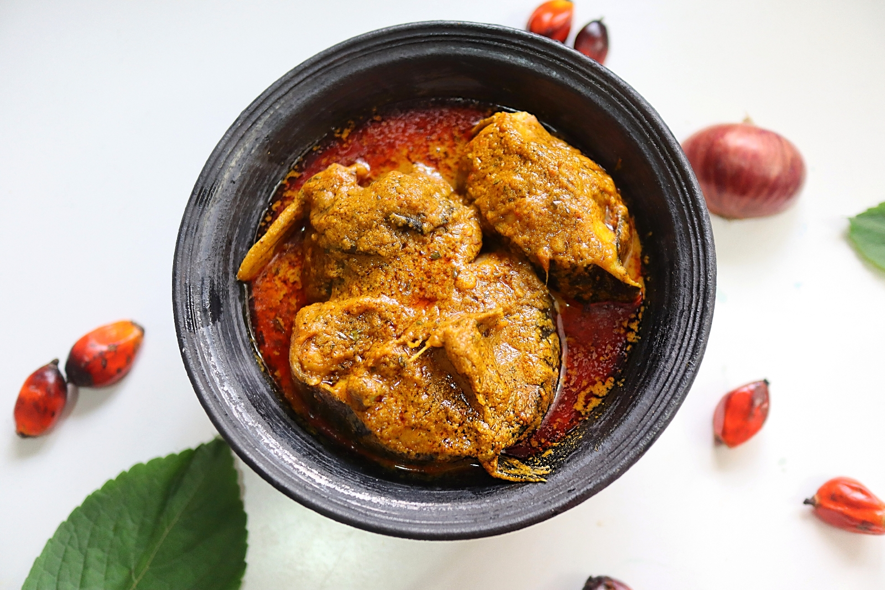

Native Delta Banga Soup
Banga Soup is a rich, palm nut–based delicacy native to the Niger Delta region of Nigeria. It is traditionally prepared with fresh palm fruit extract, spices, and assorted proteins, often enjoyed with starch, pounded yam, or rice.

Recipe Information
Preparation time:20 minutes
Cooking time: 45 minutes
Servings: 6 people
Difficulty Level: Intermediate
Ingredients
- 1 medium bowl palm nuts (or 800g canned palm nut concentrate)
- 1 kg assorted meats (beef, goat meat, cow tripe, etc.)
- 500g fresh fish or dried fish
- 200g periwinkle (optional)
- 2 tablespoons ground crayfish
- 2 tablespoons Banga spices (Ataiko, Irugeje, or store-bought mix)
- 2 seasoning cubes
- 2 tablespoons ground pepper or fresh chili
- 1 medium onion (chopped)
- Scent leaves or dried bitter leaves for garnish
- Salt to taste
Instructions
- Wash and boil the palm nuts until tender. Pound in a mortar and extract the thick palm juice (or use canned concentrate).
- In a large pot, season and boil assorted meats with onion, seasoning cubes, and salt until soft.
- Pour the palm nut extract into the pot of meat stock and allow to boil for 10 minutes.
- Add ground crayfish, pepper, Banga spices, and stir well. Let it simmer for another 15 minutes.
- Add fish, periwinkle, and adjust seasoning. Cook gently until the fish is done.
- Finally, add scent leaves or dried bitter leaves for aroma. Stir and allow to simmer for 5 minutes.
- Serve hot with starch, pounded yam, eba, or rice.
Tips
For the most authentic Delta flavor, always use fresh palm nuts
rather than canned extract. You can also substitute scent leaves with dried
basil if unavailable.
Nutrition Facts (per serving)
- Calories: 420 kcal
- Protein: 25 g
- Fat: 28 g
- Carbohydrates: 18 g
- Fiber: 4 g